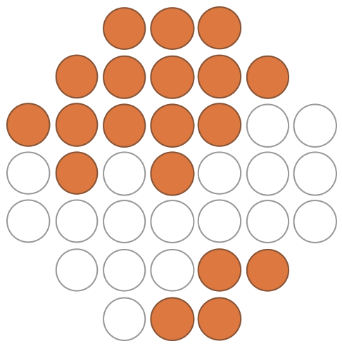

<section>
  <div class="container-fluid p-0">
    <div class="row justify-content-start">
      <h1 class="poppins-medium header display-1 text-start mt-4">Verses for everyone</h1>
      <p class="description">Poems tailored just for you.</p>
      
    </div>
    
  </div>
</section>


<section id="secondary-section">
  <div class="container-fluid">
    <div *ngFor="let post of posts | slice:0:3; let i = index" class="content row justify-content-center my-4 text-start">
      <h2 aria-label="The title of the poem." class="poppins-medium title border-rad-right col-12 text-black" >{{post.title}}</h2>
      <h3 aria-label="The author of the poem." class="poppins-light author border-rad-left col-12 text-black">{{post.author}}</h3>
      <p aria-label="The poem's text." class="lines col-12 my-2 text-start lines">{{post.lines}}</p>
  
      <div class="col-4 bottom-strip"></div>
      <div class="spacer"></div>
    </div>
  </div>
</section>


<router-outlet />
